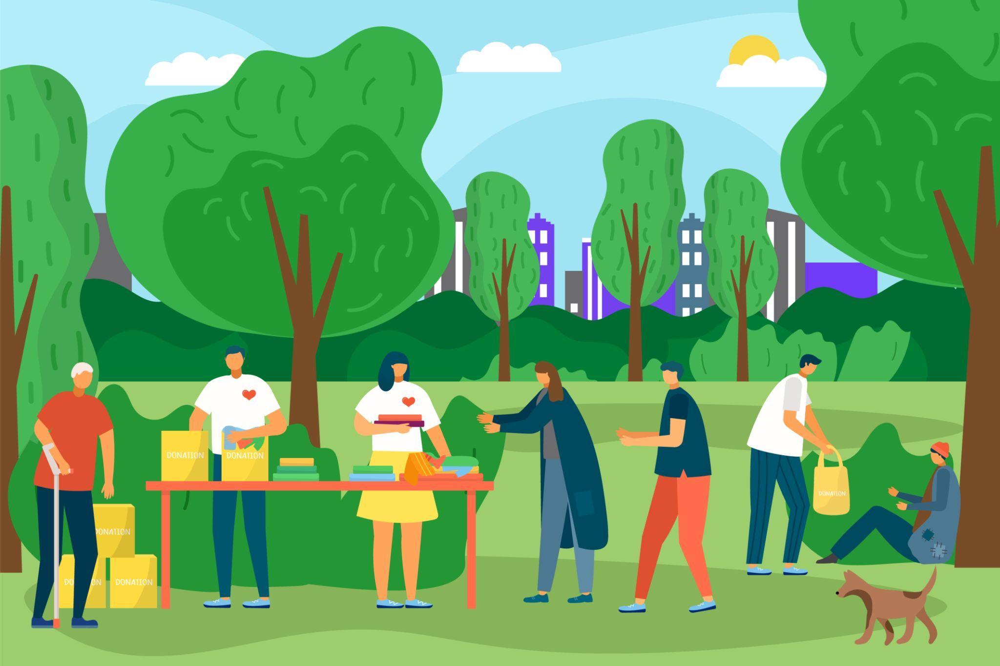
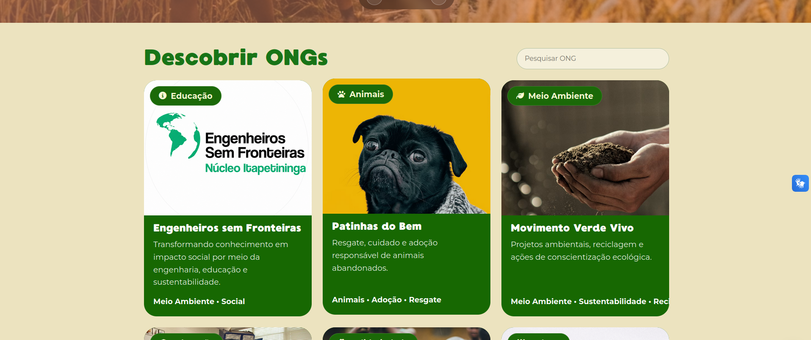

Mais pessoas conhecendo sua causa
Sua ONG passa a ter um espaco proprio para apresentar sua historia, missao, projetos e formas de atuação.
Por que esse projeto importa?
Cada ONG carrega uma causa que merece ser vista, lembrada e apoiada. Ao fazer parte dessa vitrine, sua instituição amplia sua presença, aproxima pessoas do seu propósito e fortalece o impacto social que já realiza na cidade.
As ONGs passam a ser encontradas com mais facilidade pela população.
Moradores podem descobrir causas sociais de forma simples, organizada e acessivel.
Pessoas dispostas a ajudar conseguem encontrar ONGs com as quais se identificam.
Uma apresentação clara transmite mais seriedade, confiança e profissionalismo.
O site aproxima instituições, moradores e apoiadores em um so lugar.
Empresas podem encontrar iniciativas locais para apoiar, participar e se conectar.
Dados importantes das ONGs ficam reunidos de forma acessivel e padronizada.
O projeto destaca o trabalho social da cidade e incentiva maior participação.
Maior visibilidade
Muitas ONGs realizam trabalhos importantes todos os dias, mas acabam sendo pouco conhecidas pela população. Estar presente em uma vitrine digital ajuda sua instituição a ganhar mais reconhecimento, alcançar novos publicos e mostrar com clareza a causa que defende.

Sua ONG passa a ter um espaco proprio para apresentar sua historia, missao, projetos e formas de atuação.
As informações ficam reunidas em um ambiente acessivel, facilitando que moradores encontrem e entendam o trabalho da instituição.
A vitrine ajuda a valorizar as ações sociais que muitas vezes acontecem longe dos olhos da comunidade.
Com maior visibilidade, sua ONG pode ser descoberta por voluntarios, apoiadores, empresas e pessoas interessadas em contribuir.

Encontre causas
Descubra causas sociais de forma simples e encontre oportunidades reais para gerar impacto na sua comunidade. Conecte-se a iniciativas locais, acompanhe projetos e faça a diferença onde ela mais importa.
Explorar causasMais voluntarios interessados
Conectamos pessoas a causas que fazem a diferenca. Divulgue sua iniciativa e alcance voluntarios engajados com sua missao.
Publique sua iniciativa e mostre para pessoas que querem ajudar.
Sua causa aparece para voluntarios interessados na sua regiao.
Mais maos, mais impacto e uma comunidade melhor para todos.
Buscam oportunidades para aprender, contribuir com a comunidade e adquirir experiencia pratica.
Compartilham conhecimento e habilidades para apoiar projetos e iniciativas sociais.
Pessoas que desejam participar ativamente da transformação da propria comunidade.
Pais e responsaveis que procuram atividades de impacto social para realizar em conjunto.
Interessados em ações de sustentabilidade, preservação e conscientização ambiental.
Voluntarios engajados em educação, saude, assistencia social e inclusao.
Fortalecimento de imagem
Apresente sua causa de forma profissional, aumente sua visibilidade e construa confiança com voluntarios, parceiros e apoiadores.
Informações claras e um perfil completo aproximam voluntarios, parceiros e apoiadores da sua iniciativa.
Mostre suas ações, compartilhe conquistas e fortaleça sua presenca na comunidade, gerando ainda mais oportunidades.
Apresente sua iniciativa de forma profissional e transmita seriedade e transparencia para quem conhece sua causa.
Seja encontrado por mais pessoas interessadas no que voce faz e divulgue sua causa para a comunidade certa.
Aproximação com a comunidade
O projeto aproxima instituições, moradores e empresas em um mesmo ambiente, criando laços reais entre quem oferece apoio e quem busca participar.

ONGs e projetos sociais conquistam um espaço próprio para serem descobertos pela própria comunidade.

Quem mora na cidade descobre causas próximas e encontra caminhos reais para se envolver.

Negócios locais encontram rapidamente iniciativas alinhadas aos seus valores e propósitos.

Quanto mais gente participa, mais forte fica a rede de apoio que sustenta a cidade.
Apoio de empresas e parceiros
Uma vitrine onde negócios e parceiros sociais descobrem iniciativas que transformam a comunidade e constroem legado.
Conheça projetos sociais da cidade que dialogam com os valores da sua empresa.
Conecte-se a causas reais e estabeleça relações que deixam marcas positivas.
Demonstre responsabilidade social na prática e contribua para o desenvolvimento local.
Contribuição financeira que viabiliza projetos e gera transformação real na cidade.
Materiais, equipamentos e insumos que fortalecem o dia a dia das iniciativas sociais.
Compartilhamento de conhecimento técnico para potencializar as equipes das ONGs.
Amplificação das causas usando os canais e a rede de contatos da empresa.
Engajamento da equipe em ações e eventos ao lado das ONGs parceiras.
Fortalece a imagem da empresa como agente de transformação positiva na comunidade.
Informações organizadas
Cada ONG tem um espaço claro com missão, área de atuação, contato e formas de contribuir. Sem çãos, sem informações soltas — apenas o essencial para você conhecer e decidir se envolver.

A trajetória, o propósito e os valores que movem cada instituição.
A causa defendida e o público atendido, de forma direta e transparente.
Informações acessíveis para que qualquer pessoa possa se conectar facilmente.
Orientações práticas para apoiar cada ONG — com tempo, recursos ou parcerias.

Valorização das causas locais
Muito trabalho social acontece longe dos holofotes. Este projeto existe para dar visibilidade a essas iniciativas, reconhecer quem faz a diferença e inspirar novas pessoas a se juntarem.
Conhecer as causas locais